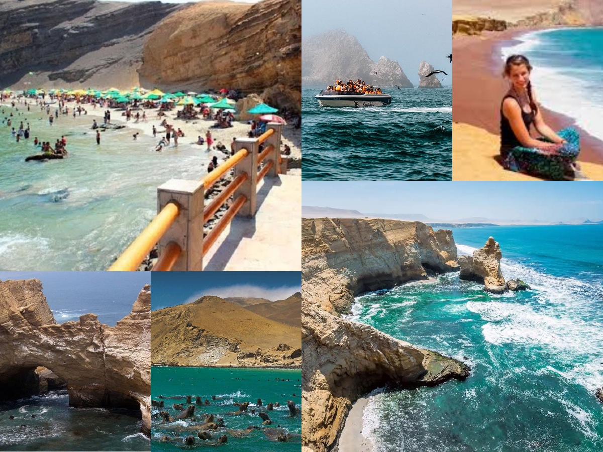

Tour en Paracas
Paracas es una ciudad de la costa oeste de Perú. Es conocida por sus playas, como El Chaco, ubicada en la bahía resguardada de Paracas. La ciudad es un punto de partida hacia las islas Ballestas deshabitadas, hogar de lobos marinos, pelícanos y pingüinos de Humboldt. La escabrosa Reserva Nacional de Paracas tiene abundante fauna y se extiende por desierto, océano, islas y la península de Paracas.
Porque escogernos?
- Profesionales del turismo.
- Hacemos turismo sostenible.
- Certificados internacionalmente.
- Mejor precio garantizado.
- Asesoría gratuita 24/7.
- Compromiso de calidad y servicio.
- Amigables con el ambiente.
- Amamos nuestro trabajo.
Que hacer?
- Nadar en la hermosa costa con aguas cristalinas
- Caminar por las hermosas costas que revosan de una abundante fauna.
- Alquilar un yate y viajar a las islas Ballestas.
- Jugar con uan gran variedad de animales marinos.
- Tomarse fotos.